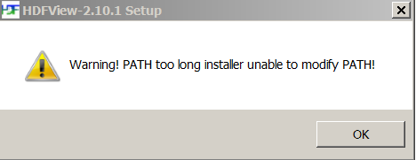

Please see The HDF Group's new Support Portal for the latest information.
- Source Code
- Binary Distributions
- Documentation (javadocs)
- Known Problems
- Compile an Application
- Example Programs
Please be aware that the software included below uses the HDF4 and HDF5 Java wrappers with 32-bit object identifiers for use with HDF5-1.8.19 and HDF 4.2.13
Source Code
The source for both HDFView and the HDF Java native interfaces are provided below.
HDFView 2.14:
[ Unix ]
[ Windows ]
Build HDFView from source
HDF Java 3.3.2 (JNI):
Build HDF Java with CMake
Binary Distributions
There are two sets of pre-built binaries provided with this release:
HDFView Version 2.14 includes the HDFView Java browser and HDF Object Package (both written in Java), along with the platform native libraries.
HDF Java Version 3.3.2 consists of the native Java HDF Interfaces for HDF4 (JHI) and HDF5 (JHI5).
The native java HDF Interface binaries were given a different version to distinguish them from the previous JHI and JHI5 software. The packaging has changed substantially with this release.
The binaries below are for 64-bit unless otherwise noted.
|
Windows ONLY: HDFView was built with VS 2015, and it requires that the Visual C++ Redistributable Packages be installed on your machine. If you cannot access HDF5 files then you do not have these packages. You can obtain them from HERE. |
|
|
Documentation
HDFView + Object Package 2.14
HDF5 Javadocs 3.3.2
HDF4 Javadocs 3.3.2
Known Problems and Workarounds
Windows error, Failed to open the file ...unsupported File Format
HDFView was built with VS 2015, and it requires that the Visual C++ Redistributable Packages be installed on your machine. If you cannot access HDF5 files then you do not have these packages. You can obtain them from HERE.
On Mac OS X, clicking on an HDF5 file brings up an empty HDFView
If you click on an HDF5 file on the Mac, it will bring up HDFView. However, the HDF5 file that you clicked on will not be opened in HDFView.
Windows error, "PATH too long installer unable to modify PATH!"
As part of the HDFView installation on Windows, a user can select to add the HDFView path to the system path. If there is not enough space to accomodate the HDFView path in the system path, the "PATH too long installer unable to modify PATH!" error occurs:

The solution is to clean up and shorten the system path prior to the HDFView installation or to not choose to add the HDFView path to the system path. There are many pages on the web describing how to set the system path on windows. A very nice page can be found here.
Windows installer cannot be executed without administrator permissions
The Windows installer requires administrator permissions and cannot be executed without them.
Using a system installed JRE with HDFView
The HDFView scripts in the HDFView install folder under the bin directory can be changed to use a system installed JRE on Windows and Linux.
Following are the instructions for using a system installed JRE:
Windows:
-
1. Edit the hdfview.bat file
2. Find the line with "set JAVABIN="
3. Change the value to the right of the "=" to the location of the system installed Java.
4. Save the changes.
Linux:
-
1. Edit the hdfview.sh file
2. Find the line with "export JAVABIN="
3. Change the value to the right of the "=" to the location of the system installed Java.
4. Save the changes.
How to Build HDFView from Source
Below are the instructions for building HDFView from source. Please note that you need both ant and CMake.
Download the following:
-
Uncompress the ant binary distribution (for example, apache-ant-1.10.1-bin.tar.gz on Unix). The ant executable can be found in the bin directory.
-
Install HDF Java 3.3.2 according to the build instructions. Once built you will find the packaged binary (for example, HDFJava-3.3.2-Linux.tar.gz) in the build directory. Uncompress the packaged binary and you will find a lib directory containing the built libraries.
-
Uncompress the HDFView source code and edit the "build.properties" file in the top HDFView source directory. Change the path for "hdf.lib.dir" to the library path of your uncompressed HDF Java 3.3.2 installation, and save the file. For example,
#hdf.lib.dir = ${env.HDFLIBS}/lib hdf.lib.dir = /<MYPATH>/CMake-hdf-java-3.3.2/build/HDFJAVA-3.3.2-Linux/HDF_Group/HDFJAVA/3.3.2/lib -
From the top HDFView source code directory run: /<path to ant executable>/ant run
-
From the top HDFView source code directory run: /<path to ant executable>/ant package
-
Go into the build/dist directory that gets created to find the HDFView distribution. For example, HDFView-2.14-Linux-x64.tar.gz.
-
Uncompress the HDFView binary and bring up HDFView by executing the shell script or batch file included.
Compile an Application
To compile an application you must set the following environment variables:
- CLASSPATH: path to HDF-Java jar files
- LD_LIBRARY_PATH: path to HDF-Java lib directory
A simple shell script or batch file can be created to compile applications. See the example script below.
To use this script you must add the correct path to the following variables:
- HDFJAVA_HOME: Path to the HDF-Java binaries
- JAVAPATH: Path to Java
When compiling with the script, leave off the application extension. For example if the script is called "runlin.sh", you would type the following to compile "program.java":
./runlin.sh program
Example Compile Script (Unix):
#!/bin/sh export HDFJAVA_HOME= export JAVAPATH= ###################################################### CPATH=$HDFJAVA_HOME"/lib/*" export CLASSPATH=$CPATH":"$CLASSPATH export LD_LIBRARY_PATH=$HDFJAVA_HOME"/lib" echo $CLASSPATH $JAVAPATH/javac $1.java $JAVAPATH/java -Xmx1G -Djava.library.path=$HDFJAVA_HOME"/lib" $1 dummy.h5 |
Example Programs
HDF-Java applications can be found on the HDF5 Examples page.
The HDF5 Java Examples by API page contains examples that use both the JHI5 and the Object package. If running these examples individually you must comment out this line at the top:
package examples....
- - Last modified: 27 July 2017